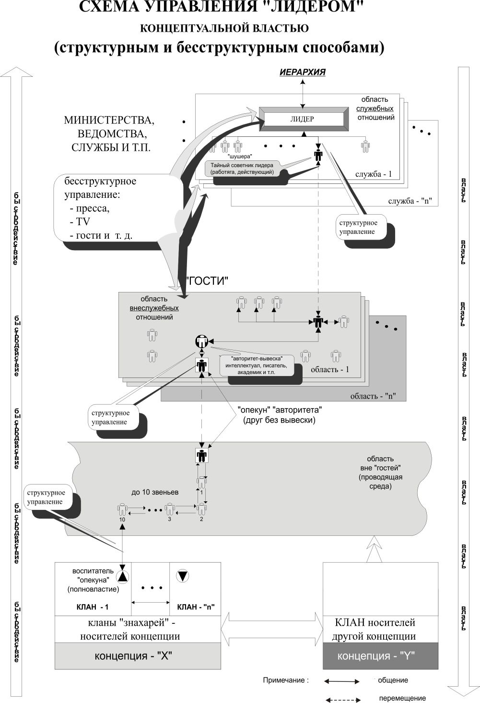

9.4. Власть знахарских корпораций в толпо-«элитарном» обществе
Том 2 · osnovy-sociologii-tom-2.pdf · стр. 225 (кандидат) · Кандидат страницы PDF; требуется сверка · источник: PDF/DOC данной редакции.
Содержит авторские утверждения; их фактическая достоверность оценивается отдельно.
9.4. Власть знахарских корпораций в толпо-«элитарном» обществе
Неумение и нежелание думать самостоятельно — это те качества толпаря, которые позволяют построить схему анонимного дистанционного управления такого рода «элитариями» в обход контроля их сознания. При этом, «элитарные» толпари, становясь руководителями, толком не понимают, как и где вырабатываются и утверждаются те решения, которые они проводят в жизнь. Принципы построения такого рода системы дистанционного управления «начальниками» в толпо-«элитарном» обществе показаны на приведённом ниже рис. 9.4-1.

<span class="smallcaps">Рис. 9.4-1. Схема дистанционного управления лидером</span>
<span class="smallcaps">в обход контроля его сознания</span>
<span class="smallcaps">со стороны носителей концептуальной власти</span>
Эта схема в цивилизованных толпо-«элитарных» обществах работала издревле, хотя научные исследования выявили возможность её целенаправленного построения только во второй половине ХХ века. В середине 1970‑х гг. одна из газет в качестве курьёза сообщила, что согласно исследованиям американских социологов двух случайно избранных американцев соединяет цепь знакомств в среднем не более, чем в десять человек1.
Если есть цепь знакомств, то в принципе по ней возможна передача информации в прямом и обратном направлении. Всё выглядит так, как в детской игре «испорченный телефон», с тою лишь разницей, что участники цепи знакомств не сидят в одной комнате, на одном диване, а общаются между собой в разное время и в разных местах. Тем не менее информация по таким цепям объективно распространяется, порождая некоторую статистику информационного обмена, на основе которой может быть построено достаточно эффективное управление.
Ви́дение этой статистики, некоторые знания психологии людей, позволяют строить такого рода цепи целенаправленно. Количество звеньев в них будет не 10 — 20, а меньше, что делает их быстродействие достаточно высоким для осуществления стратегического управления, а подбор кадров для них (естественно негласный, «в тёмную») обеспечивает достаточно высокую степень сохранения в них при передаче стратегической управленческой информации. Дело в том, что стратегическая информация в своём большинстве достаточно компактна и требует для упаковки весьма мало слов и символов.
На схеме рис. 9.4-1 показана иерархия структур и некий лидер, возглавляющий одну из них. Такого рода структурой может быть аппарат главы государства, министерство, спецслужба, научно-исследовательский институт, лаборатория в его составе, проектно-конструкторское бюро, редакция, театр, киностудия и т.п. Структура представляет собой некое штатное расписание. Персонал, наполняющий клетки штатного расписания, условно можно разделить на две категории:
аппаратную «шушеру»2, которой «что бы ни делать, лишь бы не работать», но получать зарплату;
и работающих специалистов-профессионалов, которые более или менее «болеют за дело».
Из числа вторых можно выделить ещё одно подмножество — нескольких человек, мнение которых значимо для лидера структуры при руководстве ею тем в большей мере, чем меньше он сам компетентен в деле и чем больше загружен всякой суетой, порождаемой системой и отвлекающей его от дела как такового. На схеме один из таких специалистов указан и назван: «Тайный советник лидера (работяга, действующий)».
Но люди далеко не всё время проводят на работе. Есть ещё круг неформального общения. При этом «действительные тайные советники» многих публичных лидеров или деятелей, широко известных в узких кругах профессионалов той или иной отрасли, вхожи в дома популярных личностей, чьё мнение более или менее авторитетно во всём обществе.
В дома такого рода «звёзд» вхожи и многие другие люди. Среди них могут быть и школьные и вузовские друзья «звёздных авторитетов», которые и сами не обделены талантом, и хотя в силу ряда причин не смогли обрести высоких титулов, но к их мнению прислушиваются их высокоавторитетные друзья, по отношению к которым они выступают в роли домашних действительных тайных советников. Фактически они «опекуны» общесоциальных «авторитетов»3.
Опекуны могут знать, что они выполняют миссию опекунства, но их могут употреблять и в тёмную так же, как и действительных тайных советников вождей. Либо непосредственно, либо через некоторое количество промежуточных звеньев на опекунов выходят представители наследственных кланов знахарей концепции общественного управления. Они могут быть воспитателями опекунов с детства.
В условиях России это может быть деревенский дедушка, бабка, сосед по даче где-то за сотни километров от основного места жительства «опекуна». Возможно, что и не получив высшего образования, он однако, является человеком, с которым «опекуну» интересно поговорить «за жизнь»; возможно, что этот интерес у него с детства. В иных культурных средах социальный статус знахарей может быть другим, поскольку должен обеспечивать знахарям независимость от житейской суеты общества и определённую свободу доступа к информации.
Мы рассматривали эту систему, начиная от публичного лидера некой структуры. Но исторически реально системы такого рода дистанционного управления лидером целенаправленно выстраиваются в течение годов и десятилетий в обратной направленности: от знахарей концепций к публичным лидерам отраслей общественной деятельности; а также и сами лидеры в ряде случаев создаются при развёртывании такой системы и продвигаются на тот или иной пост аналогично тому, как по шахматной доске передвигаются фигуры в ходе развёртывания той или иной стратегии шахматной игры и при этом пешка может преобразиться в ферзя.
Если начинать рассмотрение управления от места, в котором рождаются и принимаются общественно значимые решения, то главой государственности на Руси может оказаться какой-нибудь пчеловод в деревне. И как поётся в песне:
«На дальней станции сойду (в пределах суток езды от официальной столицы), трава — по пояс…» и буду прямо говорить глаза в глаза с главой внутриобщественной власти. Всё запомню, приеду в город, расскажу приятелям, как провёл выходные. Они тоже расскажут своим, а потом это — аукнется в политике, науке и т.п. А я так и не пойму, почему… А не пойму потому, что точно знаю, что на принципах игры в «испорченный телефон» и при помощи распространения сплетен и анекдотов управлять ни государством, ни отраслью деятельности невозможно. А про бесструктурный способ управления нам ничего не рассказывали ни дома, ни в школе, ни в вузе…
В качестве иллюстрации такого рода якобы невозможности приведём выдержку из книги В.Н. Дёмина «Тайны Русского народа». Он цитирует письмо профессору Г.Ц. Цыбину от 24 марта 1927 г., написанное А.В. Барченко, в 1920‑е гг. под «крышей» ОГПУ занимавшегося исследованиями истории становления Руси и русских эзотерических знаний — знаний, которыми владели знахарские кланы Руси издревле:
«<…> Это убеждение моё [об Универсальном Знании — В.Д.] нашло себе подтверждение, когда я встретился с русскими, тайно хранящими в Костромской губернии традицию [Дюн-Хор]4. Эти люди значительно старше меня по возрасту, и насколько я могу оценить, более меня компетентных в самой Универсальной науке и в оценке современного международного положения. Выйдя из костромских лесов в форме простых юродивых (нищих), якобы безвредных помешанных, они проникли в Москву и отыскали меня. <…> Посланный от этих людей под видом сумасшедшего произносил на площадях проповеди, которых никто не понимал, и привлекал внимание людей странным костюмом и идеограммами, которые он с собой носил. <…> Этого посланного — крестьянина Михаила Круглова — несколько раз арестовывали, сажали в ГПУ, в сумасшедшие дома. Наконец пришли к заключению, что он не помешанный, но безвредный. Отпустили его на волю и больше не преследуют. В конце концов, с его идеограммами случайно встретился в Москве и я, который мог читать и понимать их значение.
Таким образом установилась связь моя с русскими, владеющими русской ветвью Традиции [Дюн-Хор]. Когда я, опираясь лишь на общий совет одного южного монгола, <…> решился самостоятельно открыть перед наиболее глубокими идейными и бескорыстными государственными деятелями большевизма [имеется в виду прежде всего Ф.Э. Дзержинский — В.Д.] тайну [Дюн-Хор], то при первой же моей попытке в этом направлении, меня поддержали совершенно неизвестные мне до того времени хранители древнейшей русской ветви Традиции [Дюн-Хор]. Они постепенно углубляли мои знания, расширяли мой кругозор. А в нынешнем году <…> формально приняли меня в свою среду <…>» (В.Н. Дёмин, «Тайны Русского народа», Москва, «Вече», 1997 г., с. 9, 10. Интернет-публикация — только текст, иллюстрации отсутствуют: http://www.lib.ru/DEMIN/tajny.txt).
При этом надо понимать, что упомянутый крестьянин М. Круглов — вряд ли был «верховным жрецом» даже в русской ветви системы Дюн-Хор, поскольку первоиерархи в такого рода миссиях посредничества сами выступают крайне редко — только в неких, чрезвычайных с их точки зрения, обстоятельствах.
Особая тема в проблематике манипулирования публичными политическими деятелями и прочими «элитарными» авторитетами и кандидатами в авторитеты — женский фактор в условиях казалось бы очевидного «патриархата». Суть дела состоит в том, что раскладка инстинктивных программ биологического вида «Человек разумный» такова, что инстинктивно — при нечеловечных типах строя психики — мужчина подчинён психологически той женщине5, которая возбуждает в нём половые инстинкты, и он эмоционально зависим от неё, вследствие чего и смысл его жизни и деятельности определяется этой зависимостью. В силу этого во многих языках существуют поговорки типа «никто не герой перед своей женой». Соответственно этой объективно-биологической связи, мужчина (при нечеловечных типах строя психики) оказывается податливым к психологическому давлению женщины, и эта податливость может быть основой для организации процессов социального управления.
Женщина-манипулятор, в свою очередь может быть объектом манипуляции, но на иных психологических основах (от примитивной падкости на лесть «ты на свете всех умнее и прекрасней, и т.п.», как это проделал О. Бендер в отношении «мадам Грицацуевой» и «людоедки Эллочки», до осознанного принятия на себя миссии манипулятора6):
как на продолжительных интервалах времени (об этом библейский сюжет об Эсфири и управлении через неё древнеперсидским государством — Ветхий завет, книга «Есфирь», гл. 2; в этом же одна из «мистических» причин краха российской империи7; да и М.С. Горбачёв — последний генеральный секретарь ЦК КПСС и президент СССР — тоже был «подкаблучником» своей супруги Раисы Максимовны8; и состоялся бы Б.Н. Ельцин в том политическом качестве, в каком он вошёл в историю, без его супруги Наины Иосифовны — тоже вопрос),
так и для решения одноразовых задач (об этом библейский сюжет об убийстве Иудифью ассирийского полководца Олоферна — Ветхий завет, кн. «Иудифь», гл. 10; в СССР это же средство было употреблено для вовлечения С.М. Кирова в сценарий его убийства — С.М. Киров был любовником жены своего убийцы Л.В. Николаева9).
Т.е. кроме публичной политики, есть ещё и закулисная, в том числе и глобальная закулисная политика, а в ней есть и интимно-сексуальная составляющая как при нормальной половой ориентации, так и при извращённой10.
И если посмотреть в историю, то со времён Эсфири есть такая тема — жёны-еврейки не-евреев, занятых социально значимой деятельностью (политиков, бизнесменов, учёных, деятелей искусств), включая и целенаправленную подготовку девушек-евреек к такого рода миссии жены — вдохновительницы-манипулятора. Это один из инструментов осуществления библейского проекта.
И соответственно, знавший толк в политике Наполеон оставил афоризмы на эту тему: «В любви единственная победа — это бегство. — И добавлял: — Мужчина, допускающий, чтобы им помыкала женщина, просто ничто. Для государя любовь — подводный камень» («Комсомольская правда» 20.12. 2008 г. «Почему мужчины бояться влюбляться»: http://www.kp.ru/daily/24218/420340/), — но Наполеон не прав: то, на что он сетует, это не любовь, а власть инстинктов над индивидом при его животном типе строя психики; истинная любовь — совокупность совершенства11 — приходит только при человечном типе строя психики и она не стесняет и не привязывает, а освобождает от привязанностей, придавая новое качество ранее сложившимся отношениям12.
Так называемая «мировая закулиса» как социальное явление существует издавна — со времён ранее исхода евреев из Египта (по разным оценкам XV — XII в. до н.э.): «египетский плен» и «исход» древних евреев из Египта — её рук дело13.
Термин «мировая закулиса»14 исторически конкретно объективно подразумевает глобальную концептуальную власть как власть хотя бы отчасти концептуально властных людей, которые:
в преемственности поколений осознают библейскую доктрину порабощения человечества от имени Бога и уничтожения с нею не согласных (о ней речь шла в разделе 8.4),
привержены ей и
проводят её в жизнь всеми освоенными ими средствами воздействия, начиная от первого и кончая шестым приоритетом обобщённых средств управления / оружия (о них речь шла в разделе 8.5), а так же и посредством того, что относят к магии15.
Однако те, кто ввёл термин «мировая закулиса» в употребление, сами жили под властью библейской концепции порабощения человечества и не имели адекватных представлений об управлении как процессе вообще и о реализации процессов управления в глобальном и региональных исторических процессах. Поэтому они, введя этот термин в употребление, не дали развёрнутого управленчески состоятельного, однозначно понимаемого описания функций «мировой закулисы» и процессов её взаимодействия с публичной политикой. Вследствие этого термин «мировая закулиса» обрёл во многом мифологизированный характер, поскольку:
те, кто не воспринимают сами проявлений внутриобщественного управления глобальным историческим процессом, считают «мировую закулису» выдумкой, на которую «политически обеспокоенные маньяки-маргиналы» списывают все бедствия стихийно-исторического характера и последствия их собственной политической глупости и недееспособности;
те, кто под давлением известных ему фактов приходит к мысли о том, что «мировая закулиса» не выдумка политических маньяков-маргиналов (хотя они действительно есть и много чего выдумывают), а одна из компонент исторической реальности прошлого и политической реальности настоящего, тоже в большинстве своём не имеют представления об управлении как процессе вообще и о реализации процессов управления в глобальной и региональной истории и в текущей политике.
Поэтому «мировая закулиса» для одних просто не существует, как не существует для убеждённых атеистов Бог: для таких проявления деятельности «мировой закулисы» — выражение объективных закономерностей исторического развития в их конкретике, чему примером «исторический материализм» марксизма; а для других факт существования и деятельности «мировой закулисы» — объективная данность, но она для них так же недоступна и непознаваема, как недоступен для исследований и познания материалистической наукой16 Бог, по какой причине они бессильны против её политической воли и глобально-политической стратегии.
В таких условиях «мировая закулиса» «коси́т» под Бога, подменяя в пределах Его попущения Промысел Божий отсебятиной библейского проекта порабощения человечества от имени Бога. И действительно между Богом и «мировой закулисой» есть много общего — оба субъекта глобальной политики и истории:
не являют себя обществу в явно обозримом виде (своего общения им не навяжешь и не потрогаешь их, чтобы убедиться в их существовании);
говорят с людьми языком жизненных обстоятельств;
бытиё обоих мифологизировано.
Но есть и принципиальная разница:
С Богом можно вступить в персональный диалог не только через язык жизненных обстоятельств, но и через свой внутренний мир, если не глушить в себе совесть и веру, поскольку Бог всеведущ и Ему доступно всё в Мироздании.
А «мировая закулиса» качеством всеведения не обладает, и даже тем её представителям, которые преуспели в магии и практиках воздействия на психику других людей издали, не всё доступно — в силу их ограниченности и, в особенности, в силу того, что они не властны над Различением;
а главное — Богу и демонической «мировой закулисе» свойственна разная нравственно обусловленная этика.
Вследствие этого то, что в жизни проистекает как отсебятина «мировой закулисы», и то, что приходит в русле Промысла Божиего, — всё же различимо и понимаемо, если верить Богу (а не в Бога), не глушить в себе совесть, отгораживаясь от Бога и от Жизни теми или иными традицией и «священным писанием».
Кроме того:
Богу ― нужны человеки — носители человечного типа строя психики.
А «мировой закулисе» человеки — помеха и потому не нужны.
Также необходимо напомнить то, о чём говорилось в разделе 3.6: в случае деятельности обособившейся от общества знахарской корпорации, иначе именуемой «закулиса», в культуре общества возникает пара «эзотеризм — экзотеризм». Она предполагает, что должно быть учение (доктрина), предназначенное для широкой пропаганды в обществе (это — экзотеризм), и учение (доктрина) для «лучших», «избранных» (это — эзотеризм). И оба учения (доктрины) в жизни должны быть согласованы друг с другом так, чтобы эта пара в целом обеспечивала самоуправление общества в русле одной и той же концепции, суть которой знают однако не «экзотеристы» или «эзотеристы», а хозяева того и другого учений и их носителей (это — знахарская корпорация); а также и те, кто мировоззренчески выше «экзотеризма», «эзотеризма» и их хозяев.
На этой основе «закулисы» — мировая и региональные — осуществляют свою власть способами, отличными от тех, которыми пользуются правительства государств, и которые воспринимаются обывателями из толпы в качестве средств осуществления власти в жизни общества. Если правительства издают законы, касающиеся всех граждан (подданных), и директивы, адресованные руководителям определённых государственных структур персонально, то «закулисы» — мировая и региональные (где они сохранились) — соучаствуют через свои <u>периферии в обществе</u> в деятельности государственного аппарата и общественных институтов, поддерживая их самостоятельные действия либо саботируя их, но поддерживая в то же самое время другие действия, действия других структур как в самом обществе, так и в других странах.
Периферия «мировой закулисы» — регулярное масонство и индивиды, чьи нравственность, мировоззрение и миропонимание, определяющие их целеустремлённость и деятельность, стыкуются с законспирированными и относительно малочисленными по отношению к численности общества масонскими структурами. Свои тайные общества имеют и «региональные закулисы», однако, как только дело касается глобальной политики, их «тайные общества» утрачивают самоидентичность и отличие от масонства, сливаясь с масонством на принципе «элитарности»: «мы — посвящённые в тайны — лучше, чем не посвященные обыватели…»17.
Такая власть осуществляется на основе упреждающего события формирования миропонимания тех или иных социальных групп толпо-«элитарного» общества. На основе сформированного таким путём миропонимания целые социальные группы, общественные классы, государственные институты и народы действуют как бы по своей инициативе, но необходимым для мировой и региональных (там, где они есть) «закулис» образом. И это позволяет «мировой закулисе»18 и «региональным закулисам» ограничиться минимальным количеством большей частью недокументируемых директивных указаний19, выдаваемых в каждой стране персонально-адресно очень узкому кругу посвящённых координаторов деятельности периферии каждой из них: а далее работают схема управления, показанная на приведённом выше рис. 9.4-1, и эффекты стадно-стайного поведения миллионов индивидов, не осознающих смысла жизни — ни своего личного, ни общества (нации и государства), ни человечества в целом.
Кроме того, «закулисы» — и мировая (библейская), и региональные — практикуют магию (как персонально-адресную, так и эгрегориальную, под воздействием которой оказываются социальные группы, общества, человечество в целом — в зависимости от эгрегора, через который оказывается воздействие), которая с точки зрения подавляющего большинства обывателей существует только в сказках и к реальной политике не имеет никакого отношения. Но одно из определений термина «магия» — «магия — это другая физика, в осуществлении которой принимает участие человек: его биополя, «промодулированные» информацией и алгоритмикой личностной психики», воздействию которых отзывается Мироздание».
«Американские учёные пришли к выводу, что любые два человека связаны друг с другом через цепочку, состоящую из 6 — 7 человек, передаёт BBC.
Участники проекта Microsoft Messenger, через который посылается около половины всех мгновенных сообщений в сети, Эрик Норвиц и его коллеги пришли к такому выводу, исследовав направления 30 млрд. текстовых сообщений, посланных в июне 2006 года через программу Microsoft Messenger.
Рассчитав минимальную длину цепочки, необходимую для связи всех пользователей программы, они обнаружили, что её средняя длина составляет всего 6,6 ступеней, а 78 % пар соединены 7 или даже меньшим количеством людей. Для целей исследования знакомыми считались люди, которые напрямую посылают друг другу текстовые сообщения.
Теория “Шесть степеней удалённости” (или “шесть рукопожатий”) была высказана социологом Гарвардского университета Стенли Милграмом в 1967 году. Тогда он провёл эксперимент: жителям одного американского города было роздано 300 конвертов, эти конверты надо было передать определённому человеку, который жил в другом городе. Конверты можно было передавать только через своих знакомых и родственников» (http://www.newsru.com/world/03aug2008/lydi.html).↩
Ныне эту категорию именуют термином «офисный планктон».↩
По сути такого рода отношения «авторитета» и «опекуна» показаны в фильме «Эзоп» (по мотивам пьесы бразильского драматурга Г. Фигерейдо «Лиса и виноград». «Лентелефильм», 1981 г., режиссёр — О. Рябоконь, Эзоп — А. Калягин, Ксанф — О. Табаков, Агностос (военачальник) — В. Гафт, Клея (жена Ксанфа, возлюбившая Эзопа) — Л. Полищук). В фильме хорошо показано, что авторитет-«элитарий», философ, рабовладелец Ксанф — интеллектуально зависим от своего раба Эзопа.
Этот фильм посвящён проблематике соотношения свободы де-юре и де-факто, формальной и истинной. И в нём именно рабовладелец Ксанф предстаёт как невольник Эзопа, причём — ненужный Эзопу невольник. Хотя юридически Эзоп — раб Ксанфа, и Ксанф может освободить и освобождает Эзопа от рабства, но Эзоп не может освободить Ксанфа из той нравственной, мировоззренческой темницы, из которой Ксанф должен выбираться сам, и от которой Эзоп свободен, даже будучи рабом «де-юре».
Однако те отношения, которые в сюжете фильма складываются между Ксанфом и Эзопом, характерны и для отношений «авторитетов» и их «опекунов», хотя и обладают своей спецификой, поскольку в современном обществе обе стороны юридически не являются ни рабами, ни рабовладельцами.↩
В цитируемом издании на месте квадратных скобок с названием «Дюн-Хор» стоит знак-иероглиф, обозначающий эту традицию.↩
Женщина, в свою очередь, инстинктивно подчинена своему ребёнку: вследствие этого дети, почувствовав эту зависимость, способны настроиться на неё, подкачивать её энергетически и «вить верёвки» из матери, если она не может совладать со своими инстинктами.↩
Так история разведки (Е.Б. Черняк, «Пять столетий тайной войны. Из истории секретной дипломатии и разведки» — одно из изданий ещё советских времён) сообщает, что Венеция в средние века провела не одну успешную операцию, в которых дочери семей венецианской «элиты» якобы случайно попадали в плен к туркам во время морских путешествий, после чего продвигались на должность «любимой жены» турецкого султана, со всеми вытекающими из этого факта последствиями, как то: утечка из Стамбула стратегической информации, важной для Венеции, и воздействие Венеции на политику Турции — кадровую, торговую, внешнюю и т.п.↩
Супруга императора Николая II, безволие которого отмечал ещё один из его воспитателей К.П. Победоносцев («Эхо Москвы», радиопрограмма «Наше всё» от 27.07.2008 — «А потом Николай II. Он сразу почувствовал в нём. Это первый Победоносцев отметил безвольность. Мальчик способный очень, но безвольный»: http://www.echo.msk.ru/programs/all/529683-echo), выросла при дворе своей бабки английской королевы Виктории и была в России, пусть даже бессознательно, проводником британской глобальной политики, направленной на ликвидацию империй-конкурентов — Российской, Германской, Австро-Венгрии.
Более обстоятельно о роли женского фактора в «мужском мире» в материалах Концепции общественной безопасности см. в работе «От человекообразия к человечности…».↩
В отличие от Николая II и М.С. Горбачёва попытки «рулить» И.В. Сталиным и СССР через манипулирование Н.С. Аллилуевой завершились её самоубийством, которое при всей трагичности судьбы её самой, воздействии этого события на И.В. Сталина и их детей представляло собой самоликвидацию зомби-биоробота.↩
Это также пример на тему: Положение обязывает. Если кого-либо положение не обязывает, то оно же его и убивает.↩
Вопрос о роли субкультур половых извращений будет рассмотрен далее разделе 21.3 и в Приложении 9 «“ЛГБТ”-сообщество и интернацизм» (том 6 настоящего курса).↩
Послание апостола Павла к Колоссянам, 3:14.↩
В материалах КОБ эта тема освещена в аналитической записке 1999 г. «Почему, призывая к Богодержавию, Внутренний Предиктор не приемлет Последний Завет?».↩
Об этом в материалах Концепции общественной безопасности см. аналитическую записку «Синайский “турпоход”» в сборнике «Интеллектуальная позиция» № 1/97 (2), а также Приложение 1.↩
Термин «мировая закулиса» был введён в первой половине ХХ века русским философом и юристом (в 1906 г. окончил юридический факультет Московского университета) Иваном Александровичем Ильиным (1882 — 1954). В 1922 г. он был выслан из СССР на пресловутом «философском пароходе», вследствие чего жил и умер в эмиграции. В 2005 г. прах И.А. Ильина был возвращён в Россию.↩
Культ и псевдонаучное обоснование мнения о том, что магия физически невозможна, — одно из средств подавления самодеятельности в области магии и поддержания собственной монополии на магические практики. В действительности магия — практическое выражение физики, однако — физики, выходящей за пределы миропонимания «физики для всех», изучаемой в школах и вузах.↩
Как уже отмечалось в главе 5, её метод в биологических исследованиях в своих крайних проявлениях состоит в следующем — поймать, анатомировать, собрать скелет и сделать чучело, выставить скелет и чучело на показ и писать о том, как их первооснова живёт в природе или жила до того, как её истребили человекообразные представители вида «Человек разумный». Но эта методология познания не во всех случаях оказывается работоспособной… Однако не все естествоиспытатели-материалисты-атеисты это понимают.↩
Иллюстрацией такой утраты самоидентичности и слияния их друг с другом в единой алгоритмике толпо-«элитаризма» является приведённая в разделе 9.1 притча «Три учителя и погонщики мулов», сюжет которой стал общим и для суфиев, и для хасидов.↩
Вследствие такого способа осуществления «мировой закулисой» власти на местах — детективно-полицейские попытки выявить и разоблачить «мировой заговор» и агентуру «мирового правительства» (в смысле установить членство, пароли, явки, каналы связи и т.п.), всегда приводят к абсурду.↩
Это — издревле властвующее своего рода «дотелефонное» право.↩